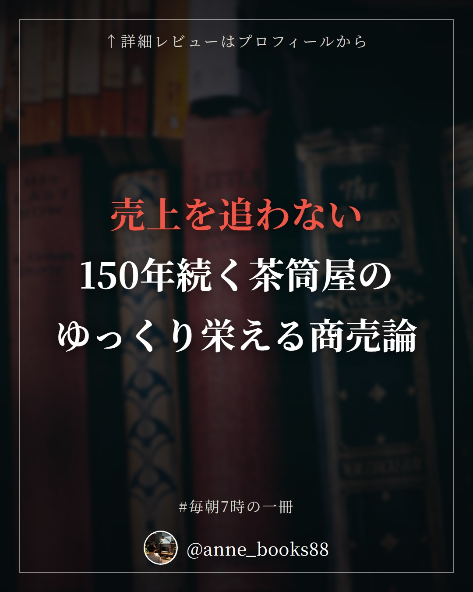
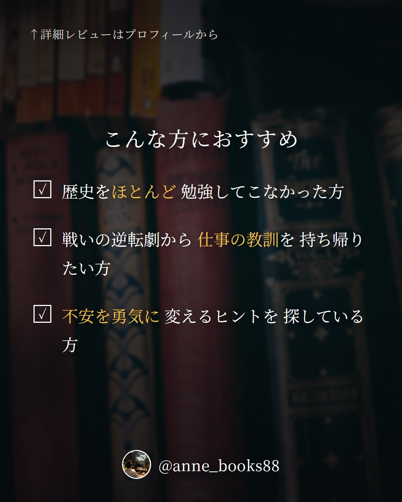
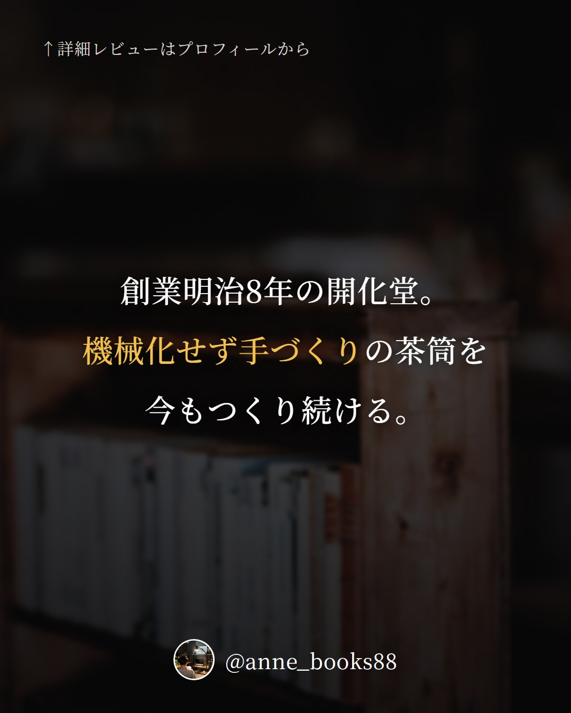
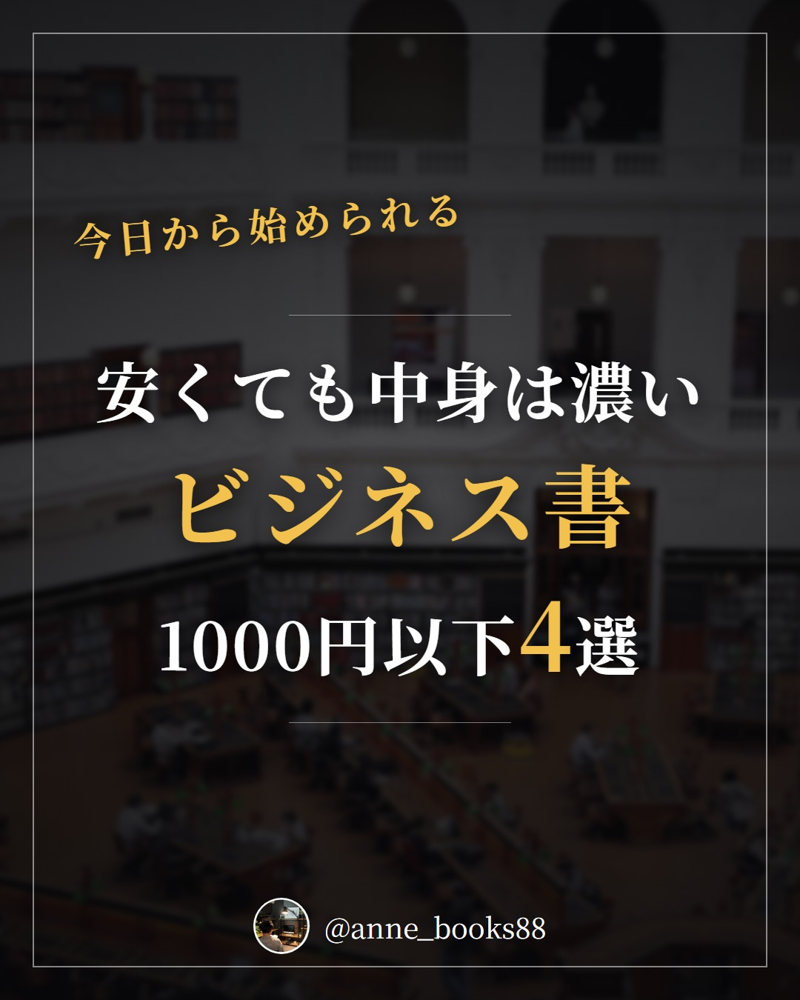
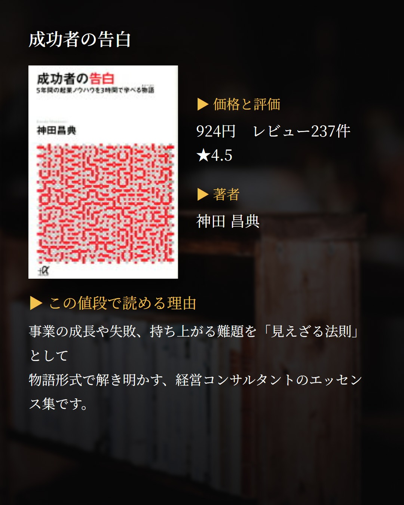
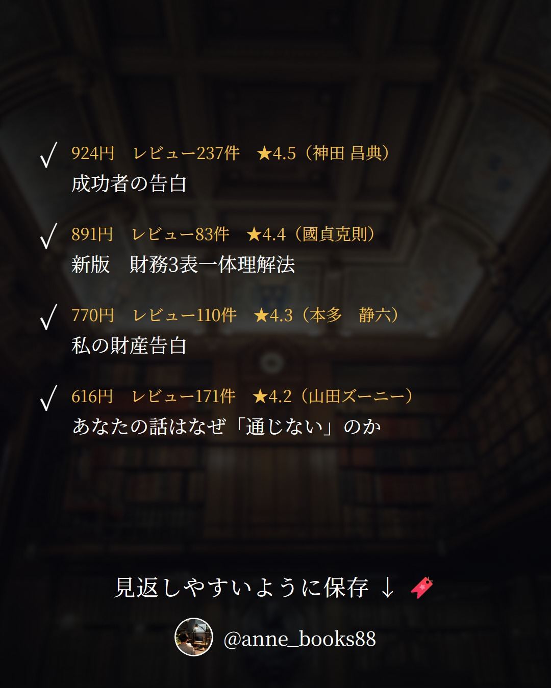

これから配信する投稿
まだ投稿していない下書きを、日付の早い順に14件まで並べています。 投稿が済んだ分は自動的に消えます。更新日時: 2026-09-11 21:02
09/13 (Sun)
心配すんな。全部上手くいく。
ヒカル1991-


カードの文言
- 1 表紙: 一番の失敗は やりたい事を やらない事
- 2 書誌情報: 2022年9月30日 / ヒカル1991-
- 3 おすすめ1: やりたい事を 先送りにしている方
- 3 おすすめ2: 言葉や思考の使い方を 鍛え直したい方
- 3 おすすめ3: 逆境や批判との 付き合い方を知りたい方
- 4 問いかけ: ゼロのままの自分から 最初の「1」を どうつかむか。
- 5 本文: 夢は公言しろ。 なりたいものになれるのは なろうとしたものだけ。
- 6 本文: 会話では常に答えを持つ。 自分の番でなくても 答えを探す訓練をやめない。
- 7 本文: 新しい事、 人がやっていない事を 探してやってみる。
- 8 本文: 落ち度や過ちは素直に認める。 不利は、有利である。
- 9 まとめ: 普段YouTubeは見なくても 考え方はしっかりしている。 最初の1をつかむための一冊。
キャプション
今回は、カリスマYouTuberヒカルさんの初書籍を読みました。新刊図書に入っていたので手に取った一冊です。普段彼のYouTubeを見ることはないのですが、読んでみると考え方はしっかりしていて、素直に頷ける部分が多くありました。 面白いと感じたのは三つ。ひとつ目は「一番の失敗はやりたい事をやらない事」。目次にも「夢は公言しろ」「なりたいものになれるのは、なろうとしたものだけ」と並んでいて、動き出すことそのものを繰り返し押してくる本です。 ふたつ目は、相手と会話する時に常に答えを持っておくこと。自分が答えるタイミングでなくても、自分だったら何と言うかを探す訓練をやめない。会議でいきなり振られることもあるので、これは仕事でも私生活でも効きそうだと感じました。 三つ目は、新しい事・人がやっていない事を探してやってみるという姿勢。そして落ち度や過ちは素直に認めること。「逆境のマニュアル」という章があり、批判や炎上との向き合い方にも触れられています。 著者は「ゼロからはなにも生まれない、まずは1をつかむことが肝心」と書いています。その1を探している方に。
書籍固有ハッシュタグ
09/14 (Mon)
26年9月前半
殿堂入り書評


カードの文言
- 1 表紙: 何度も読み返したい / 今も読み継がれるビジネス書殿堂入り4選
- 2 入社1年目の教科書（レビュー1,091件 ★4.0 / 岩瀬 大輔） 読み継がれている理由: 「頼まれたことは必ずやりきる」など仕事の3原則と 50の行動指針。新人にも指導する側にも読まれ続ける定番です。
- 3 現代語訳 論語と算盤（レビュー519件 ★4.0 / 渋沢 栄一、守屋 淳） 読み継がれている理由: 道徳と利益は両立するのか。渋沢栄一の経営哲学を 読みやすい現代語訳で。働き方に迷ったとき立ち返れる古典です。
- 4 地頭力を鍛える（レビュー597件 ★4.1 / 細谷 功） 読み継がれている理由: 「結論から」「全体から」「単純に」考える3つの思考力を、 フェルミ推定を使って鍛える。考える力の教科書として長く読まれています。
- 5 不格好経営（レビュー493件 ★4.2 / 南場智子） 読み継がれている理由: DeNA創業者が明かす失敗の連続と奮闘の舞台裏。 成功譚ではなく「不格好」な過程が書かれているのが読み継がれる理由です。
- 6 まとめ: チェックリスト
キャプション
今も読み継がれているビジネス書を4冊まとめました。特に2冊目の『現代語訳 論語と算盤』は、「論語」＝道徳と「算盤」＝利益を調和させるという渋沢栄一の考えが、明治期に書かれたものなのに今の働き方の議論にそのまま重なる点が気になります。利益至上主義から社会的責任まで価値観が入り乱れる今だからこそ原点に帰る意味がある、と訳者が書いているのも納得できるところです。1冊目の『入社1年目の教科書』は50の行動指針が新人以外にも支持されている本、3冊目の『地頭力を鍛える』はフェルミ推定で考える力を鍛える本、4冊目の『不格好経営』はDeNA創業者が失敗の連続を明かした本。どれも発売から年数が経っても評価が高いまま残っている4冊です。
書籍固有ハッシュタグ
09/15 (Tue)
仕事で必ず結果が出るハイパフォーマー思考
渡邉光太郎


カードの文言
- 1 表紙: 職種を問わない 思考と行動が 結果を分ける
- 2 書誌情報: 2019年2月 / 渡邉光太郎
- 3 おすすめ1: スキルだけでは 伸び悩みを感じている方
- 3 おすすめ2: 方向転換すべきか 迷っている方
- 3 おすすめ3: チームの空気を 入れ替えたい方
- 4 問いかけ: あなたの成果は スキルの差ですか 思考の差ですか
- 5 本文: 仕事には職種を問わない思考と 職種特有のスキル 二つのレイヤーがある
- 6 本文: 二つで悩んだ相手に 買わなかった方を贈る 期待を上回るという発想
- 7 本文: 意固地にならず方向転換する ジャンボ尾崎は投手から打者へ そしてプロゴルファーへ
- 8 本文: 異なる価値観を受け入れ チームに新鮮なメンバーを入れる 異見こそ力になる
- 9 まとめ: 武器ができたら試してみる 北斎は70歳を超えて 飛躍的に進化した
キャプション
今回は、仕事の成果の出し方を扱ったビジネス書です。 面白かったのは、仕事の能力を二つのレイヤーで捉える視点でした。部門や職種を問わない思考・行動と、部門や職種に特有のスキル。この二つを有効活用することが重要だと書かれています。日本の生産性がOECD38カ国中23位であることや、新卒一括採用とジョブローテーションの話とあわせて読むと、スキルだけを磨いても足りない理由が見えてきます。 もう一つ印象に残ったのが、期待を上回るパフォーマンスの例です。二つで悩んで買わなかった方をプレゼントする。相手の期待の少し外側に踏み出す行動が、記憶に残る仕事をつくるのだと思いました。 そして、柔軟に方向転換すること。ジャンボ尾崎は甲子園優勝投手としてライオンズに入団し、投手から打者に転向、3年目に引退してプロゴルファーへ。意固地にならないことの強さが伝わってきます。 葛飾北斎は70歳を超えてから絵画表現が飛躍的に進化した、という一節も心に残りました。世で戦える武器ができたら惜しまず試してみる。いつからでも遅くない、と背中を押される一冊です。
書籍固有ハッシュタグ
09/16 (Wed)
フランス人は10着しか服を持たない
ジェニファー・スコット, 神崎朗子


カードの文言
- 1 表紙: 服を減らすより 自分に合うものだけを 長く大切に使う
- 2 書誌情報: 2020年9月12日 / ジェニファー・スコット, 神崎朗子
- 3 おすすめ1: クローゼットを 開けるたびに もやっとする方
- 3 おすすめ2: 高かったから捨てられない という理由で 服を持ち続けている方
- 3 おすすめ3: 暮らしの質を 少しずつ上げていきたい方
- 4 問いかけ: その服は本当に必要で 今の自分に 合っていますか
- 5 本文: パリの人は同じ服を 着まわすことを厭わない 大事なのは自分らしさ
- 6 本文: 同じ服はありえないという カリフォルニアとの対比が 価値観の違いを映す
- 7 本文: お金を出したから捨てられない その理由で 持ち続けていないか
- 8 本文: いつも一番いいものを使えば 日常が特別になる
- 9 まとめ: 部屋を整え良いものを長く使う その積み重ねが 生活の質を上げていく
キャプション
今回は、暮らし方と身の回りのものとの付き合い方を考える一冊です。100万部のベストセラーシリーズの最終巻で、2020年に文庫化されたものだそうです。 おそらくキラキラ系女子が読む本なのだと思いますが、ローランドさんがおすすめしていたので手に取りました。 面白かったのは、パリの人とカリフォルニアの人の対比です。パリの人は同じ服を着まわすことを厭わない。大事なのは自分らしさを表現できているかどうか。一方でカリフォルニアの人にとって、同じ服の着まわしはありえない。この違いが繰り返し書かれていて、自分がどちらに近いかを考えさせられました。 もうひとつ刺さったのが、お金を出して買ったからその服は捨てられない、となっていないかという問いかけ。その服は本当に必要で今の自分に合っているのか、自信を持って外を歩けるのか。読みながら思わずワードローブを開けて、自分が何をどれだけ大切にしているのかを確かめたくなりました。 出版社の紹介によれば、したくないことは感じよくきっぱりと断る、誰にでも礼儀をもって接する、といった生き方の話も含まれているようです。 常に部屋をきれいに保つことが自分の気持ちを上げることにつながる。良いものを長く使うことが生活の質を上げるコツ。いつも一番いいものを使えば、日常が特別になる。 クローゼットを開けるのが少し憂うつな方は、ぜひ。
書籍固有ハッシュタグ
09/17 (Thu)
26年9月後半
殿堂入り書評


カードの文言
- 1 表紙: 何度も読み返したい / 今も読み継がれるビジネス書殿堂入り4選
- 2 夢をかなえるゾウ1（レビュー943件 ★4.3 / 水野敬也） 読み継がれている理由: 関西弁のゾウの神様が出す課題は「靴をみがく」など地味なものばかり。 物語で読める自己啓発として長く支持されています。
- 3 ロスジェネの逆襲（ドラマ「半沢直樹」原作）（レビュー974件 ★4.4 / 池井戸 潤） 読み継がれている理由: 出向先の証券子会社から、親会社のエリートに挑む半沢直樹の第3弾。 団塊・バブル・ロスジェネ、世代を超えた戦いが描かれます。
- 4 本を読む本（レビュー477件 ★4.1 / モーティマー・J・アドラー、チャールズ・V・ドーレン、外山 滋比古、槇 未知子） 読み継がれている理由: 1940年刊行以来、各国で訳されてきた読書法の古典。 点検読書から分析読書まで、段階を追った読み方が解説されます。
- 5 漫画 バビロン大富豪の教え（レビュー628件 ★4.2 / ジョージ・S・クレイソン、坂野旭、大橋弘祐） 読み継がれている理由: 古代バビロニアから伝わるお金の知恵を漫画化した一冊。 儲け方の技術ではなく、お金に縛られない生き方が語られます。
- 6 まとめ: チェックリスト
キャプション
今も読み継がれているビジネス書を4冊まとめました。特に3冊目の『本を読む本』は、1940年にアメリカで刊行されてから世界各国で翻訳され、読み継がれてきた読書の古典です。読むに値する良書とは何か、読書の本来の意味とは何かを問いながら、初級読書から点検読書、分析読書、そして最終レベルまでを段階的に示していく構成になっています。読書術の本はたくさんありますが、80年以上も残っているという事実そのものが気になりました。ほかに選んだのは、関西弁のゾウの神様が地味な課題を出す『夢をかなえるゾウ1』、出向先から親会社に挑む『ロスジェネの逆襲』、100年読み継がれるお金の名著を漫画化した『漫画 バビロン大富豪の教え』。物語で読むもの、技術を学ぶもの、切り口はそれぞれ違いますが、どれも長く手に取られ続けている4冊です。
書籍固有ハッシュタグ
09/18 (Fri)
パナソニック覚醒
樋口泰行


カードの文言
- 1 表紙: 変われなかった会社が 変われた理由
- 2 書誌情報: 2022年4月15日 / 樋口泰行
- 3 おすすめ1: 組織の変革を 任されている方
- 3 おすすめ2: 人の意識から 変えたい方
- 3 おすすめ3: 事業の見直しを 先送りしたくない方
- 4 問いかけ: 制度を作っただけで 組織は変わりましたか
- 5 本文: 1階はカルチャーマインド改革。 人の意識が変わらないと 組織は変わらない
- 6 本文: 2階はソリューションシフト、 3階は事業立地改革。 順番に積み上げる
- 7 本文: 創業の工場だからと 聖域を作らない。 シビアに見極める
- 8 本文: 画一的な服装は 発想を画一的にする。 完全私服化という選択
- 9 まとめ: ビッグピクチャーを描き 聖域なく見極める。 変革の順序が見える一冊
キャプション
今回は、組織変革の実践記録です。25年ぶりに古巣へ戻った樋口泰行さんが、パナソニック コネクトの社長として取り組んだ変革を42項目にわたって語っています。 面白いと感じたのは、変革を「1階・2階・3階」と building のように積み上げて考えている点。1階はカルチャーマインド改革で、まずは人の意識が変わらないと絶対に会社や組織は変わらないという考え方。その上に2階のソリューションシフト、ビジネスモデル改革、そして3階の事業立地改革が乗る。順番が明確なのが印象的でした。 もうひとつは、聖域を作らないこと。創業の品目だから、創業の工場だから、という理由で判断を甘くしない。松下電器の聖地とされた岡山工場の閉鎖という決断についても語られています。ポートフォリオマネジメントから逃げない、という項目がまさにそれだと思いました。 そして個人的にいちばん腑に落ちたのが、画一的な服装は発想を画一的にする、という指摘。会社を完全私服化して、自由なアイディアが生まれやすい状態をつくる。小さく見えて、意識に効く打ち手だと感じます。 変革推進室を作っただけでは足りない。何から手をつけるか迷っている方に。
書籍固有ハッシュタグ
09/19 (Sat)
胸アツ 戦略図鑑
齊藤颯人, 本郷和人, 本村凌二


カードの文言
- 1 表紙: 逆転の戦いから 学ぶ、覚悟と戦略の 30の智慧
- 2 書誌情報: 2023年2月8日 / 齊藤颯人, 本郷和人, 本村凌二
- 3 おすすめ1: 歴史をほとんど 勉強してこなかった方
- 3 おすすめ2: 戦いの逆転劇から 仕事の教訓を 持ち帰りたい方
- 3 おすすめ3: 不安を勇気に 変えるヒントを 探している方
- 4 問いかけ: 戦略と熱意、 勝敗を分けるのは どちらだと思いますか
- 5 本文: 桶狭間は無策だった説も。 結果を出すのは 最後は熱意と直感
- 6 本文: 吉宗は補欠の補欠。 人当たりの良さで 将軍まで上りつめた
- 7 本文: 長州征伐が示すのは、 統率なき大群より 統率された精鋭の強さ
- 8 本文: アルマダの海戦。 安全の追求が スピード勝負では枷になる
- 9 まとめ: 30の戦いを通して 戦略と覚悟を学び直す、 歴史が苦手でも読める一冊
キャプション
今回は、歴史上の戦いからビジネス教養を学ぶ図鑑タイプの一冊です。本屋をぶらぶらしていて立ち読みしたのがきっかけでした。世界史も日本史も大学受験の科目になかったので、正直ほとんど真面目に勉強しておらず、初見の話ばかりでした。 面白かったのは桶狭間の戦い。雨にまぎれて今川義元を叩いたというのが定説ですが、最近は無策だったことが明らかになっているそうです。それでも結果につながったのは信長の熱意と直感。最後にものを言うのは熱意なのかもしれません。 徳川吉宗の話も印象的でした。御三家では格下の紀州徳川、その藩主の補欠という「補欠の補欠」だったのに、人間関係と人当たりの良さで将軍にまで上りつめた。実力だけが道をひらくわけではない、という読み方もできます。 そしてアルマダの海戦。安全を追求することは、スピードが重要な戦いでは余計な時間や手間になる。ちなみに「無敵艦隊」は当時の呼び名ではなく、後にイギリス人が呼び始めた、賞賛と皮肉の混じった言い方だそうです。 出版社の紹介文によれば、覚悟と戦略で道をひらく30の智慧が収められているとのこと。歴史が得意でなくても、拾える教訓がたくさんありました。あなたはどの戦いから何を持ち帰りますか。
書籍固有ハッシュタグ
09/20 (Sun)
共感と商い
八木隆裕







カードの文言
- 1 表紙: 売上を追わない 150年続く茶筒屋の ゆっくり栄える商売論
- 2 書誌情報: 2023年3月1日 / 八木隆裕
- 3 おすすめ1: 数字に追われず 長く続く仕事のかたちを 考えたい方
- 3 おすすめ2: 自分の仕事の価値を もう一度 見極めたい方
- 3 おすすめ3: 応援してくれる人と 長く関係を築きたい方
- 4 問いかけ: 売上を追わずに、 商いを長く続けることは 可能でしょうか。
- 5 本文: 創業明治8年の開化堂。 機械化せず手づくりの茶筒を 今もつくり続ける。
- 6 本文: 売上を追わず、 1日につくる量の上限を決める。 クオリティを守るために。
- 7 本文: 自分の任期の無事ではなく、 本気で後世を考える。 家族経営の長期的な目線。
- 8 本文: 人の好意は遠慮せず 精いっぱい受け取り、 恩を精いっぱい返す。
- 9 まとめ: 小さく、急がず、人間らしく。 時代に振り回されない 商いの考え方が学べる一冊。
キャプション
今回は、商いの続け方をテーマにした一冊です。京都で創業明治8年、150年ものあいだ手づくりの茶筒をつくり続ける「開化堂」。機械化せず、つくるモノは当時のまま。それなのに近年話題になり、海外でも売れるようになった理由が書かれています。 私が面白いと思ったのは、売上を志向せず、1日につくる量の上限を決めているところ。クオリティを維持するために、あえて上限を引く。アウトプットの質を高めたいなら、手当たり次第に仕事を受けてはいけない、と読みながら考えさせられました。 もうひとつは、家族経営の時間感覚です。自分の任期をミスなく終える、という発想ではなく、本気で後世のことを考える。ロンドンへの販路拡大も、付き合いを重ねていくやり方でした。長期的な目線があると、判断の基準そのものが変わるのだと思います。 そして、人の好意は遠慮せず精いっぱい受け取り、恩を精いっぱい返すこと。目次にも「互いの間で、貸し借りを持ち合う」とあり、関係のつくり方が一貫していました。 「小さく、急がず、人間らしく」。数字に追われがちな時こそ、読んでみてほしい一冊です。
書籍固有ハッシュタグ
09/21 (Mon)
26年9月後半
ビジネス書 新刊特集


カードの文言
- 1 表紙: 楽しみにしている / 26年ビジネス書新刊4選
- 2 持たざる者の戦略（2026年9月7日 / 牛尾剛） 私の注目ポイント: 努力を根性でなく「設計」するという発想。 散漫な脳を武器にする方法が気になります。
- 3 「1時間」定時を短くしても、儲かる会社になる方法（2026年9月8日 / 石井隆介） 私の注目ポイント: あえて定時を1時間短くして儲ける逆転の発想。 OECD平均6時間40分という比較も気になります。
- 4 これだけは知っておきたい「社会保障」のしくみとルール（2026年9月9日 / 松島 寛） 私の注目ポイント: 106万円の壁の撤廃など令和8年の制度に対応。 手取りともらえるお金を図表で整理できそうです。
- 5 由利鉄と銚子電鉄の現場からみるローカル鉄道の可能性（2026年9月7日 / 那須野育大、春田啓郎、竹本勝紀） 私の注目ポイント: 銚子電鉄や由利高原鉄道の実例から地域交通を考える。 研究者と経営者の両方の視点が読めそうです。
- 6 まとめ: チェックリスト
キャプション
9月後半の気になる新刊をまとめました。特に2冊目の『「1時間」定時を短くしても、儲かる会社になる方法』は、労働時間を減らすと業績が下がるのでは、という直感と真逆の提案をしている点が気になりました。OECD加盟国の定時は平均6時間40分だという指摘もあり、8時間が当たり前という前提を一度疑ってみたくなります。1冊目の『持たざる者の戦略』は、努力は根性ではなく設計するものという言葉が印象的で、仕組み化の具体を知りたいです。3冊目の『これだけは知っておきたい「社会保障」のしくみとルール』は、106万円の壁の撤廃など2026年に変わる制度に対応していて、給与明細の見方が変わりそう。4冊目の『由利鉄と銚子電鉄の現場からみるローカル鉄道の可能性』は、研究者の分析と鉄道経営者の実践が並ぶ構成が珍しく、経営書としても読めそうだと思いました。
書籍固有ハッシュタグ
09/22 (Tue)
なぜミーティングで決めたことが実行できないのか
矢本治


カードの文言
- 1 表紙: 決めたのに 動き出せない会議を 終わらせる
- 2 書誌情報: 2023年3月29日 / 矢本治
- 3 おすすめ1: 会議で決めたことが いつも進まないと 感じている方
- 3 おすすめ2: 「後ほど検討」で 終わる打ち合わせを 変えたい方
- 3 おすすめ3: 目標を立てても 行動に移せずに 悩んでいる方
- 4 問いかけ: 決めたはずのことが、 なぜ実行されないまま 消えていくのか。
- 5 本文: 小さく始める。 短い時間で始める。 完成度を下げる。
- 6 本文: 「後ほど検討」を避け、 いま色々決めてから 解散する。
- 7 本文: やりたくない業務も 自分のメリットを踏まえ 前向きな参加に変える。
- 8 本文: 計画を人に宣言すると 達成率が上がる。 パブリックコミットメント。
- 9 まとめ: 決める会議から 動き出す会議へ。 実行のコツを集めた一冊。
キャプション
今回はミーティングと実行についての一冊です。決めたはずなのに動かない、という状態に心当たりがある方は多いのではないでしょうか。 私が読んでいて特に響いたのは三つです。 ひとつめは、行動に移すコツとして挙げられていた「小さく始める」「短い時間で始める」「完成度を下げる」という考え方。どれもハードルを下げる方向に揃っているのが印象的でした。 ふたつめは、苦しくても「後ほど検討」で逃げないこと。いま、色々決めてから解散する。この一手間があるかどうかで、その後がまったく変わるのだろうと思います。 みっつめは、パブリックコミットメント。人に目標を宣言すると達成率が高くなるという有名な話ですが、否が応でもやらざるを得なくなるのが効くのだと思います。私がこのライブラリで読書の記録を公開しているのも、実はこれです。剛史の婚活もきっとこれ。 もうひとつ、業務が自分のやりたいことでない場合に、しぶしぶではなく自分のメリットを踏まえて前向きに参加する形へ変えてしまう、という視点も残りました。 次のミーティング、解散する前にどこまで決められるか試してみませんか。
書籍固有ハッシュタグ
09/23 (Wed)
デザインフルネス
Sjövall Isabelle、久山葉子


カードの文言
- 1 表紙: 心地よさは 脳科学で デザインできる
- 2 書誌情報: 2023年6月24日 / Sjövall Isabelle、久山葉子
- 3 おすすめ1: 部屋づくりを 感覚だけで決めたくない方
- 3 おすすめ2: 働く環境を 見直して整えたい方
- 3 おすすめ3: 北欧の暮らし方に 興味がある方
- 4 問いかけ: あなたの家や職場は 脳にとって 心地よい場所ですか
- 5 本文: 窓の外が木々だった患者は レンガの景色より 回復が早かった
- 6 本文: 家庭で音楽をかけると 家族の物理的な距離が 平均12%近づく
- 7 本文: 座りっぱなしは新しい喫煙。 歩道や自転車レーンが 健康リスクを下げる
- 8 本文: 緑・丸み・フラクタル。 ストレスを軽減する 形が環境にはある
- 9 まとめ: 環境は気分の飾りではなく 脳への入力。 整える理由が見つかる一冊
キャプション
今回は、暮らしと働く場所を「脳科学」から考える一冊です。著者はニューロデザイン——脳が環境にどう反応し、どんな生理的・心理的影響を受けるかを研究する分野の専門家。北欧発の「デザイン×脳科学」という切り口が新鮮でした。 面白かったのは、胆嚢手術後の患者を二つに分け、片方はレンガの景色、片方は木々の景色の部屋にしたところ、後者のほうが回復が早かったという話。景色は気分の問題だと思っていましたが、体の回復速度にまで及ぶのかと驚きました。 もうひとつ、家庭で音楽をかけると家族の間の物理的な距離が平均12%近づく、という一文も印象に残っています。距離感は性格や関係性の問題だと思いがちですが、環境側から動かせる部分があるのだと気づかされます。 ほかにも、オフィスに緑を置いてストレスを減らす、丸みのある形で交流を促す、ヒュッゲな要素を採り入れる、フラクタルのパターンが脳の回復を助ける、など具体的なアイデアが並びます。「座りっぱなしは新しい喫煙」という言葉もメモしました。 私は図書館で読了しました。日光を最大限に取り入れる、そもそもオフィスワークに拘らない。働きやすい環境とは何かを、あらためて自分に問い直したくなります。まずは机まわりの一角から、変えてみませんか。
書籍固有ハッシュタグ
09/24 (Thu)
26年9月後半
1000円以下の名著





カードの文言
- 1 表紙: 今日から始められる / 安くても中身は濃いビジネス書1000円以下4選
- 2 成功者の告白（924円 レビュー237件 ★4.5 / 神田 昌典） この値段で読める理由: 事業の成長や失敗、持ち上がる難題を「見えざる法則」として 物語形式で解き明かす、経営コンサルタントのエッセンス集です。
- 3 新版 財務3表一体理解法（891円 レビュー83件 ★4.4 / 國貞克則） この値段で読める理由: 取引ごとに財務3表をつくる「会計ドリル」で、 決算書の基本から読み解き方までを初学者向けに再編成しています。
- 4 私の財産告白（770円 レビュー110件 ★4.3 / 本多 静六） この値段で読める理由: 月給4分の1天引き貯金を元手に巨万の富を築き、 定年時に全財産を寄付した人物が語る、お金と職業の考え方です。
- 5 あなたの話はなぜ「通じない」のか（616円 レビュー171件 ★4.2 / 山田ズーニー） この値段で読める理由: 前提の通じない相手と話す、聞き上手になる、人を説得する。 伝わらない原因を基礎から解説したコミュニケーション技術論です。
- 6 まとめ: チェックリスト
キャプション
1,000円以下で読める、評価の高いビジネス書を4冊まとめました。1冊目『成功者の告白』は、売れるタイミングや事業の成長と失敗のきっかけを「見えざる法則」として描いた一冊。2冊目『新版 財務3表一体理解法』は、取引ごとに3つの表をつくる会計ドリルで決算書の仕組みをたどります。3冊目『私の財産告白』は、貧農から東大教授になり天引き貯金を元手に資産を築いた本多静六が、最晩年に語ったお金と仕事の話。4冊目『あなたの話はなぜ「通じない」のか』は、前提を共有していない相手にどう伝えるかを基礎から扱います。特に3冊目の『私の財産告白』は、解説者が「誰もがわかっているごく当たり前のことしか語っていない。しかし、だからこそ強烈なパンチなのだ」と書いているところが気になります。当たり前を最後までやり切った人の言葉は、値段とは別の重さがあるのだと思います。
書籍固有ハッシュタグ
09/25 (Fri)
キーエンス解剖 最強希望のメカニズム
西岡杏1991-


カードの文言
- 1 表紙: 顧客が困る前に 動く組織の仕組み
- 2 書誌情報: 2022年12月23日 / 西岡杏1991-
- 3 おすすめ1: 営業の仕事を 広げる手がかりが欲しい方
- 3 おすすめ2: 顧客の潜在ニーズを つかむ方法を知りたい方
- 3 おすすめ3: 時間あたりの成果を 意識して働きたい方
- 4 問いかけ: お客様に聞いてから 動くのでは、 もう遅いのでは？
- 5 本文: 「他にお困りの方は いませんか？」 一言が仕事を広げる
- 6 本文: 行動しても書かなければ 仕事をしていないのと同じ。 記録が質を上げる
- 7 本文: 顧客の潜在ニーズを 自発的に書き出す ニーズカードは月1回がノルマ
- 8 本文: 10割の完璧より、 8割納得の提案を早く。 営業はスピード感が命
- 9 まとめ: 売上を全従業員の労働時間で割る。 時間への意識を組織で揃える一冊
キャプション
今回は、営業と組織づくりの本です。読みながら何度も線を引いたのは「行動していても書かなければ、仕事をしていないのと一緒」という考え方でした。動いた事実を記録に残し、後任に渡すことで仕事の質が上がる。私自身、耳が痛いところです。 もうひとつ印象的だったのが、顧客の潜在的なニーズを自発的に書き出す「ニーズカード」。月1回がノルマとして仕組み化されています。どういう商品が欲しいかを聞いてから動くのでは遅く、相手が何に困っているのかを、相手の立場に立って徹底的に考え抜く。その姿勢が個人の心がけではなく、仕組みとして回っているのが面白いところでした。 提案についても、10割対応するチャンピオンスペックを目指しがちなところを、8割納得するもので早く出す。とにかくスピード感が命を地で行く会社なのだと感じます。 そして「時間チャージ」。売上・付加価値を全従業員の労働時間で割った数字を目標として掲げ、時間に対する思いを改めてもらう。時間あたりでどれだけの価値を出せているか、自分の一日にも置き換えて考えたくなりました。 「他にお困りの方はいませんか？」。明日、誰かに聞いてみませんか。
書籍固有ハッシュタグ
09/26 (Sat)
オールノット
柚木麻子


カードの文言
- 1 表紙: 全部ダメでも 全部は落ちない 人とのつながりの話
- 2 書誌情報: 2023年4月19日 / 柚木麻子
- 3 おすすめ1: 人とのつながりの 大切さを 改めて感じたい方
- 3 おすすめ2: 一度の失敗が 許されない空気に 息苦しさを感じる方
- 3 おすすめ3: 移動中に一気に 読み切れる小説を 探している方
- 4 問いかけ: たった一回の失敗も 許されない。 そんなのおかしい、と 思ったことはありませんか
- 5 本文: 貧困にあえぐ苦学生の真央が 山戸家の生き残り・四葉と 出会うところから始まる物語
- 6 本文: 四葉に託された 一つの宝石箱が 真央の人生を変えていく
- 7 本文: オールノットは 全てダメの意味と 全てがダメではない意味を持つ
- 8 本文: 真珠のネックレスの 糸が切れても 全部は落ちない結び方のこと
- 9 まとめ: 人と人のつながりが やっぱり大切だと 改めて感じさせる一冊
キャプション
今回は、帰省中の新幹線の往復で読み切った小説を紹介します。柚木麻子さんの『オールノット』です。 物語の主人公は、友達も恋人も将来の希望もない、貧困にあえぐ苦学生の真央。彼女が出会うのが、かつて栄華を誇った山戸家の生き残り・四葉です。四葉に託された一つの宝石箱が、真央の人生を変えていく——というのが大きな流れになっています。 私が一番おもしろいと思ったのは、タイトルの「オールノット」という言葉です。全てダメという意味がある一方で、全てがダメではない、という意味も持っている。さらに真珠のネックレスの結び方の名前でもあって、仮に糸が切れてしまっても、真珠が全部つながって落ちてしまうことがないタイプをオールノットと呼ぶそうです。この二重三重の意味を知ってからページをめくると、見え方が変わってきます。 出版社の紹介文にある「ちゃんとした人にはたった一回の失敗も許されないなんて、そんなのおかしい」という四葉の言葉も、読み終えたあとに残りました。 読み終えて改めて感じたのは、人と人のつながりがやっぱり大切だということ。移動時間のお供に、ぜひ手に取ってみてください。